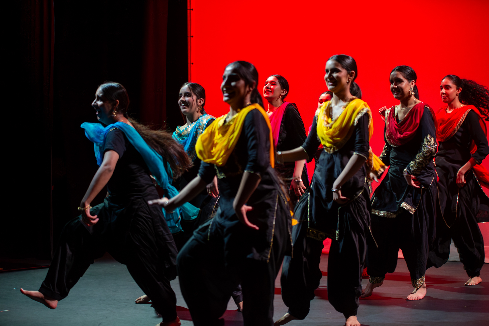
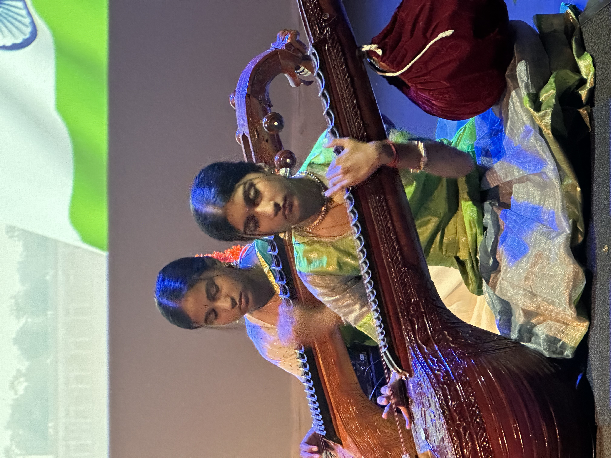
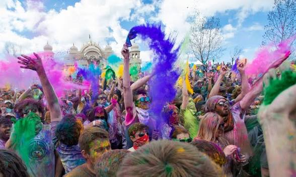
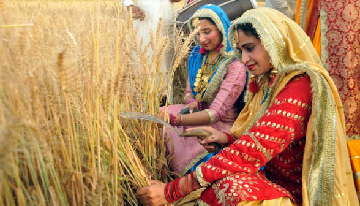

Cultural Activities
Our club offers a variety of cultural activities for all students interested in learning and sharing Indian traditions.
Our Indian Cultural Group at Ormiston Senior College takes part in many exciting activities throughout the year.
These activities help students celebrate Indian culture, express their creativity, and work together as a team.
Students get the opportunity to perform, learn about traditions, and represent the school in cultural events.
Bollywood and classical Indian dance performances



Music performances with traditional instruments –
Students perform traditional Indian music using instruments such as the tabla, sitar, and veena.
These performances allow students to share the beauty of Indian classical music with the school community.
Through practising and performing together, students develop musical skills, confidence, and an appreciation for cultural traditions.


Indian food tasting and cooking demonstrations –
Members of the group sometimes organise food tasting events where students can try a variety of traditional Indian dishes.
Cooking demonstrations help others learn about the ingredients, spices, and cultural importance of Indian cuisine.
These activities bring people together and allow students to experience another important part of Indian culture.
Cultural presentations about Indian traditions –
Students and guest speakers sometimes give presentations about different aspects of Indian culture and traditions.
These presentations may include topics such as Indian history, festivals, clothing, music, and cultural values.
They help students learn more about Indian heritage and allow the wider school community to understand and appreciate the diversity of Indian culture.
Festivals We Celebrate
We celebrate many Indian festivals throughout the year, giving everyone a chance to experience the culture.
- Holi – The colourful festival celebrating joy and unity.
- Diwali – The festival of lights symbolising good over evil.
- Baisakhi – A harvest festival celebrated in Punjabi culture.
- Indian Independence Day – Celebrating India’s independence and heritage.




.jpeg)